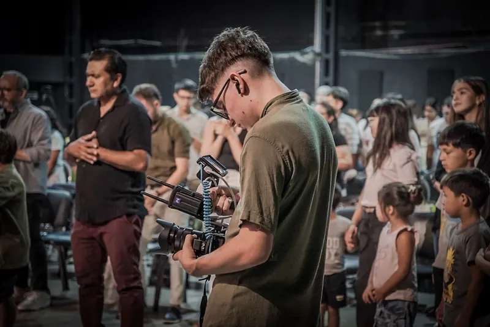
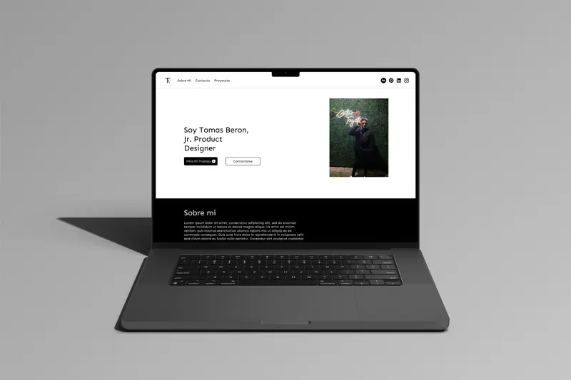
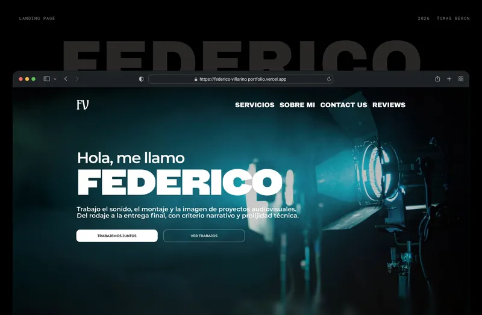
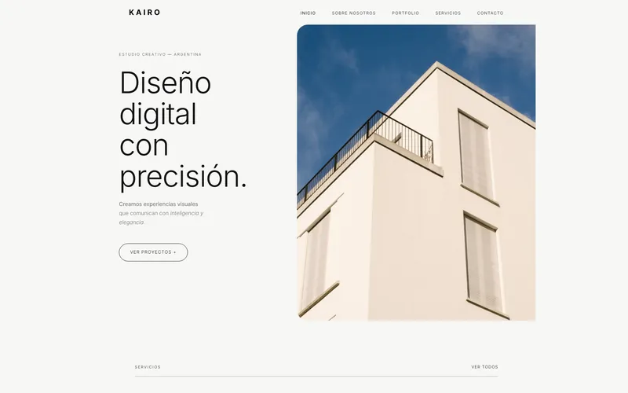
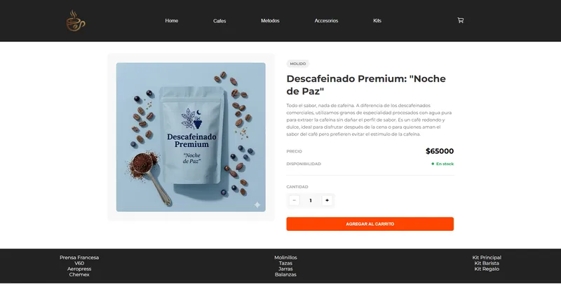
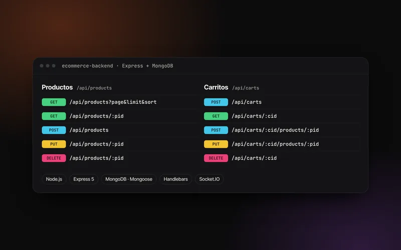
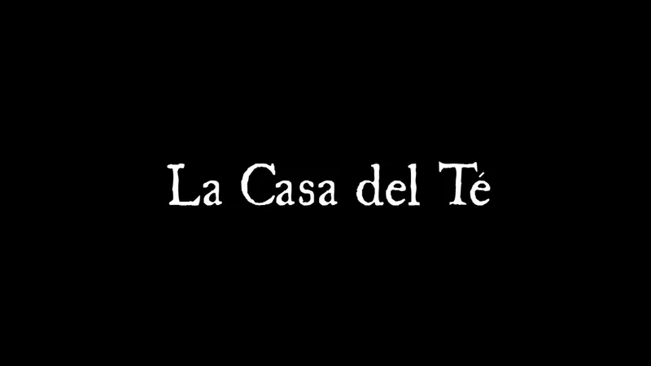
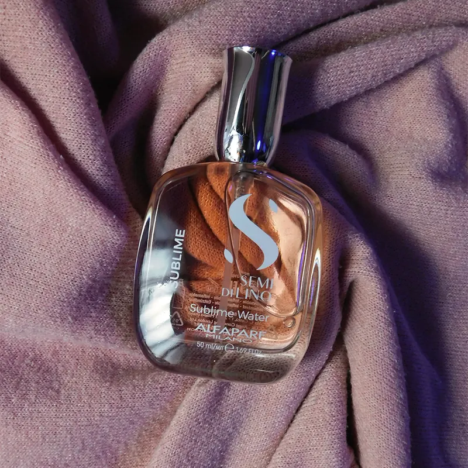

Trabajos seleccionados
Cuatro áreas que se cruzan: el diseño UX/UI como eje, y lo audiovisual, la web y el diseño gráfico como herramientas.
Product Design UX/UI
Sitios web de punta a punta para clientes de Estados Unidos: wireframes, prototipos mobile y desktop, sistemas de diseño e iconos, y QA con el equipo de desarrollo.
Ver área ↗
Producción audiovisual
Edición de video, motion graphics y postproducción: testimonios de clientes, contenido institucional y cortometrajes.
Ver área ↗
Desarrollo Full Stack
Formación full stack en JavaScript, React, Node.js y MongoDB. Entender cómo se construye me permite entregar diseños viables desde el primer día.
Ver área ↗
Diseño gráfico
Identidad visual, portadas musicales y piezas para Meta Ads, Google Search y redes sociales.
Ver área ↗
Todos los proyectos(12)
Cada tarjeta lleva al detalle del proyecto o al sitio publicado.

Deep Work
App de productividad que combina Deep Work, pomodoro y bloqueo de distracciones.
Rediseño de Compra Gamer
E-commerce de hardware con foco en accesibilidad, navegación y búsqueda.

Federico Villarino
Portfolio one page para un técnico audiovisual independiente: su primera presencia digital.

Kairo Creative Studio
Sitio de un estudio creativo ficticio, diseñado en Figma y maquetado en código con fidelidad al diseño.

DonRamón
E-commerce de una cafetería en React: catálogo, carrito persistente y checkout con Firebase.

Backend de e-commerce
API REST en Node.js, Express y MongoDB, con vistas en Handlebars y actualización en tiempo real.

ASENWARE
Diseño y desarrollo del sitio para la llegada a Argentina de esta empresa internacional de alarmas contra incendio.

Nimat Solutions
Rediseño completo del sitio, mejoras de navegación y sistema de tickets personalizado.

La Casa del Té
Cortometraje universitario: montaje, cámara y escenografía.

Costuras del Pasado
Cortometraje universitario: guion, cámara, foco y corrección de color.
Tomix Visuals
Branding de mi marca: logo, paleta de colores y tipografía.

Le Papillon
Campaña publicitaria para una peluquería: dirección y coordinación de modelo y maquilladora.
Hagamos algo que se note.
¿Tenés un sitio, un producto o una campaña en mente? Contame qué necesitás y lo pensamos juntos. Trabajo en remoto, en español o en inglés.
wikipediatomitob@gmail.com